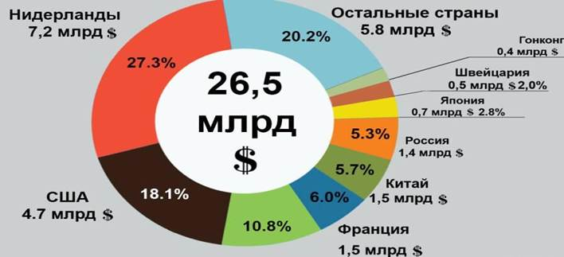
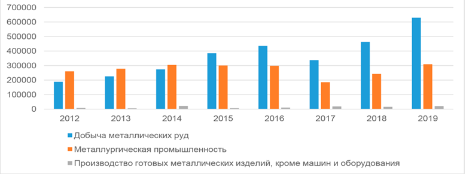
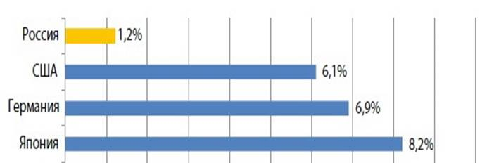
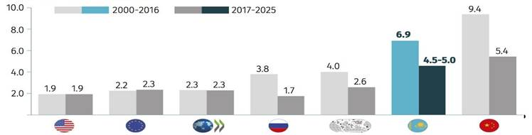

Қазақстан Республикасы Президентінің жанындағы Қазақстан Республикасының Ұлттық ғылым академиясы
Қазақстан Республикасы Президентінің жанындағы Қазақстан Республикасының Ұлттық ғылым академиясы1 ВОПРОСЫ РАЗВИТИЯ НАУЧНОЙ, НАУЧНО-ТЕХНИЧЕСКОЙ, НАУЧНО-ИННОВАЦИОННОЙ ДЕЯТЕЛЬНОСТЕЙ
1.1 Проведение аналитических и прогнозных исследований по научно-технологическому развитию отраслей экономики, включая социально-гуманитарные направления. Выработка рекомендации по определению приоритетных направлений научной, научно-технической и инновационной деятельности в соответствии с приоритетами социально-экономического развития, а также приоритетных направлений стратегических, фундаментальных и прикладных научных исследований в Республике Казахстан
1.1.1 Аналитические и прогнозные исследования по научно-технологическому развитию отраслей экономики
Аналитические и прогнозные исследованиия по научно-технологическому развитию по направлению «Передовые производственные технологии, наука и инновации»
Целью анализа научно-технологического развития РК является определение состояния и уровня производства и приоритетов, обеспечивающих устойчивый, динамичный и сбалансированный рост отраслей экономики на долгосрочный период. Мировая тенденция в экономике заключается в том, что всё осуществляется технологическими процессами – от добычи сырья до переработки его в целевые продукты.
В условиях современных преобразований технического базиса уровень экономического потенциала в целом определяется используемыми инновационными технологиями.
Общеизвестно, что к инновациям относят улучшение отдельных технико-экономических параметров изделий или технологий их изготовления, модернизацию или создание новых моделей машин, оборудования, приборов и материалов в пределах того же самого поколения техники и технологии производства. Комплексная автоматизация систем управления инновационными технологическими процессами позволит Казахстану выйти на мировой рынок.
Правовую основу настоящего «Аналитические исследования по научно-технологическому развитию отраслей экономики» составляют Конституция Республики Казахстан, Послания Главы государства народу Казахстана от 1 сентября 2022 года «Справедливое государство. Единая нация. Благополучное общество»; «Экономический курс Справедливого Казахстана» от 1 сентября 2023 года [1], Постановление Правительства Республики Казахстан от 28 марта 2023 года № 248 «Концепция развития высшего образования и науки в Республике Казахстан на 2023-2029 годы» [2], Законы «Об образовании», «О науке» и «О коммерциализации результатов научной и научно-технической деятельности» и другие нормативно-правовые акты.
Потенциальные возможности развития и эффективности производства определяются прежде всего научно-техническим прогрессом – инновационной технологией. Инновационная технология - это внедрение новой техники и технологий на основе достижений и реализации научных знаний с целью повышения эффективности экономики. Инновационные пути развития экономики в Республике Казахстан берут свое начало с перехода экономики страны к рыночным отношениям [3,4,5,6].
Законы «О науке», «О государственной поддержке малого предпринимательства», «Об инновационной деятельности» (2002г) и др.дали толчок развитию инновационной деятельности. В 2003 году была принята «Стратегия индустриально-инновационного развития Республики Казахстан на 2003 – 2015 годы», где переход экономики базировался на индустриально-инновационной технологии с использованием природных полезных ископаемых и минеральных ресурсов страны [3]. В 2005 году была принята «Программа по формированию и развитию национальной инновационной системы Республики Казахстан на 2005–2015годы» [4]. Создавался «Национальный инновационный фонд», «Центр инжиниринга и трансферта технологий» и «Фонд науки». В 2011-2013гг стимулировалась инновационная деятельность и активизировались научные исследования в вузах и научно – исследовательских учреждениях.
Несмотря на определенные положительные результаты, поставленные цели не были достигнуты в полной мере. Перераспределение инвестиционных ресурсов в несырьевой базе оказалось неэффективным, и экономика сохранила в основном сырьевую направленность. В инновационную деятельность в низкой степени были вовлечена наука, а между производством и научными организациями не сформировалось согласованное взаимодействие. Это привело к невыполнению в полном объеме запланированных инновационных прорывных проектов. Производственные процессы ориентировались в основном на получение быстрой прибыли за счет реализации сырьевых материалов. Данное обстоятельство способствовало развитию торгово-посреднической деятельности, сферы услуг и не позволяло происходить инновационным переменам в РК.
Для устранения расхождения инновационной политики и бизнеса принимается «Государственная программа форсированного индустриально-инновационного развития Казахстана на 2010-2014 годы» [5]. Анализируя опыт Китая, Южной Кореи и Японии, было сделано заключение, что, минуя индустриализацию, переход к инновационной экономике невозможно. В этой связи приняты 13 отраслевых и 11 функциональных бюджетных программ, которые определили приоритеты развития и индустриализации Казахстана: «Производительность – 2020»; «Инвестор – 2020»; «Экспорт – 2020»; «Дорожная карта бизнеса – 2020».
Таким образом, на первом этапе государством была создана необходимая нормативно-правовая основа. На втором этапе формировался научно-исследовательский сектор, были приняты меры по развитию научного потенциала, инновационного предпринимательства и финансовой инфраструктуры, венчурные фонды.
Третий этап развития экономики – это этап с привлечением инноваций и учетом потребностей производства. Однако слабая связь науки с производством, отсутствие научного сопровождения по совершенствованию процессов технологии привели к отставанию в конкурентоспособности продукции Казахстана на мировом рынке.
Мировые тренды развития научно – технологических отраслей экономики
С учетом мировых трендов развития отраслей экономики и проведения прогнозных сессий с предметным погружением по технологии рапид форсайт (rapid foresight), приоритетными отраслями экономики в РК являются [7,8,9]:
- горно-металлургический и топливно-энергетические комплексы;
- сельское хозяйство;
- машиностроение, транспорт и логистика;
- информационно-коммуникационные технологии (ИКТ);
- энергетика;
- туризм и строительство.
В условиях современных преобразований технического базиса приоритетными направлениями на 2024-2026 годы выбрано шесть направлений [10].
Рейтинг и прямое иностранное инвестирования экономики [7,8,9]
По данным US News & World Report (2021) Республика Казахстан находится на 75 месте в рейтинге лучших стран предпринимательства (рисунок 1.1.1) [8].
Рисунок 1.1.1. Рейтинг и прямое иностранное инвестирование экономики
В 2021 году расходы на НИОКР, проводимые в РК, составили 109,0 млрд тенге (2019 год – 82,3 млрд, 2020 год – 89,0 млрд тенге). Однако данное увеличение не оказало существенного влияния на наукоемкость ВВП, которая в 2021 году составила 0,13%, что в 14 раз меньше среднемировых показателей (1,79%).
Наряду с этими основной движущей силой для рационального использования сырьевых, обрабатывающих отраслей, энергетических ресурсов и создания эффективных технологий являются прямые иностранные инвестиции (ПИИ).
По данным 2019 года (и ранее) «KAZAKH INVEST» по динамике валового притока ПИИ в Казахстан ($млрд), обрабатывающая промышленность почти в 7 раз меньше инвестируется, чем того требует развитие данной отрасли экономики [7,8,9].
Рисунок 1.1.2. Диаграмма притока прямых инвестиций
В 2020 году Казахстан стал лидером по приросту объёма чистых прямых иностранных инвестиций среди 17 стран с переходной экономикой и 34 стран, не имеющих выхода к морю. В РК поступило 3,9 млрд долларов ПИИ – это на 34,9% больше, чем годом ранее. Работа в этом направлении продолжается.
|  |
Рисунок 1.1.3. Сравнительная характеристика инвестиций
Рисунок 1.1.4. Инвестиции в основной капитал по видам экономической деятельности
Анализ внутренних затрат на НИОКР в разрезе источников финансирования показывает, что на долю государства приходится 58,2 %, предприятий – 33,5 % и других источников – 8,3 %. Затраты на исследования в общей сумме внутренних затрат на НИОКР [6] составили:
- в области инженерных разработок и технологий составили 40 %;
- в области естественных наук занимают 29%;
- сельскохозяйственных наук - 13,4%;
- гуманитарных наук - 6,7%;
- социальных наук - 2,8%;
- медицинских наук - 8,1%.
Научно-технологическое состояние отраслей экономики: горно- металлургические комплексы
По состоянию на 1 января 2020 года в Казахстане насчитывается 2422 предприятия ГМК, из которых 89 крупных, 64 средних и 2269 малых.
В Республике сосредоточено 30% мировых запасов хромовой руды, 25% — марганцевых руд, 10% — железных руд. Запасы меди, свинца и цинка составляют соответственно 10% и 13% от мировых. Из 105 элементов таблицы Менделеева в недрах Казахстана выявлено 99, разведаны запасы по 70-ти, вовлечено в производство более 60-ти элементов [11-13]. По состоянию на конец 2018 г. объем доказанных запасов угля в Казахстане составлял 25,6 млрд тонн, или 2,2% мировых запасов. Республика Казахстан занимает 8 место в мире по объему запасов угля. В 2019 г. объем добычи урана составил 22,8 тыс. тонн. По данному показателю Казахстан занимает первое место в мире.
Согласно Государственной программе индустриально-инновационного развития РК на 2020-2025 гг., основной целью сектора ГМК является формирование конкурентоспособной обрабатывающей промышленности на внутреннем и внешнем рынках. При этом основными приоритетами в черной металлургии являются привлечение иностранных инвесторов, диверсификация своей экспортной и потребительской корзины, содействие технологической модернизации и реализация ряда мероприятий по поддержке черной металлургии [11-13].
|  |
Рисунок 1.1.5 Инвестиции в основной капитал (за исключением добычи угля), млн. тенге
Энергетический комплекс
Правительство Казахстана Постановлением от 28.03.2023г утверждена Концепция развития топливно-энергетического комплекса на 2023-2029 годы [13]. В документе дан анализ развития электроэнергетической, атомной отраслей, нефтяной, газовой промышленности и газотранспортной системы. Как известно, с 2019 года реализуется Стратегия цифровизации АО «Национальная атомная компания «Казатомпром» до 2028 года», направленная на полную автоматизацию и оптимизацию производственных процессов. Условием для начала разработки новых урановых месторождений и в целом для развития атомной промышленности и энергетики послужит применение оцифрованных технологических решений.
В угольной промышленности, с учетом Парижского соглашения и обязательства в его рамках, планируется увеличить использование технологий максимального сокращения парниковых газов, в т.ч. технологий глубокой переработки угля и использование экологически чистых технологий в угольной генерации. В нефтегазовой отрасли реализация проектов направлена на расширение месторождений Тенгиз, Кашаган и Карачаганак с увеличением объема добычи нефти. Будет начата работа по геологическому изучению недр участков Аккудук, Самтыр, Шоттыкколь, Темир и Жанибек.
Химия и химическая промышленность
Химия - это системообразующая отрасль в смежных областях всей экономики. Получение новых материалов, создание новых лекарств, препаратов и минеральных удобрений для сельского хозяйства, реагентов для исследований в области биологии и генетики невозможно без участия химии и химической технологии [12].
Рисунок 1.1.6. Влияние химии на смежные области отрасли, %
На 1 августа 2023 года в РК насчитывалось 1030 предприятий действующих предприятий химической отрасли. Из них 96,9% являются малыми предприятиями, 2% - средними и 1,2% составляют крупные предприятия. Согласно общему классификатору экономической деятельности (ОКЭД), «Производство продуктов химической промышленности» составляло на 16.6% больше, чем за аналогичный период 2022 года. По состоянию на 1 августа 2023 года количество крупных предприятий уменьшилось на 2 единицы. По общему классификатору экономической деятельности (ОКЭД), объем инвестиций в основной капитал составил 88,3 млрд. тенге, что на 5,2% больше, чем за январь-июль 2022 года. Удельный вес данной отрасли занимает 2,2% в общем объеме инвестиций в основной капитал в сфере промышленности.
«Производство резиновых и пластмассовых изделий» осуществлялось на 1472 предприятиях (98% – это малые, 1,8% – средние и только 0,2% – крупные предприятия), производено товаров на 4,6% больше, чем на 1 августа 2022 года. Количество крупных предприятий осталось на уровне аналогичного периода прошлого года (3 единицы). В текущем 2023 году продолжается положительная тенденция по значительному увеличению объема инвестиций в основной капитал - в 3,6 раза (по сравнению с первым полугодием 2022 года), и за январь-июль 2023 года он составил 72,1 млрд. тенге. Инвестиции по данному виду деятельности занимают 1,8% в общем объеме инвестиций в основной капитал по промышленности.
Значительные объемы ресурсов фосфорных удобрений (на 99%), красок и лаков на основе полимеров (57,3%) приходятся на производство в Казахстане. Здесь следует отметить, что удельный вес отечественного производства азотных удобрений сократился с 54.9% в январе – июне 2022году до 18.4% в январе – июне 2023 года.
Рисунок 1.1.7. Динамика роста химической продукции
Однако ресурсы пасты зубной, пасты чистящей и шин автомобильных (по 100%), полиэтилена в первичных формах (98,3%), полистирола (93.6%) средств моющих (90.5%), аминосмол (75.8%) поверхностно-активные веществ (71.8%) и др. восполняются за счет импорта. Таким образом, химия занимает вторую строчку в общей сумме импорта после продукции машиностроения [11].
При ежегодно растущих объемах экспорта казахстанской продукции химической промышленности, объемы импорта химии в нашу страну составляют в три раза больше. По итогам прошлого года эти цифры составили, соответственно, 1,06 и 3,2 млрд долларов США.
Рисунок 1.1.8. Экспорт (коричневый) и импорт (синий) химической продукции
Экспорт казахстанской химической продукции в основном представляют жёлтый фосфор, сера, азотно-фосфорные удобрения, хромовые соли, полипропилен, нитрат аммония и пр.
За 2021г. наибольшая доля отраслевого производства приходится на сектор «Химикаты для промышленности» – 65,4%. Драйвером роста отрасли в Казахстане выступает также агрохимия – 22,1%. Далее идут «Базовая нефтехимия» - 11,5%, «Прочая химия» - 0,9%.
Доля химической промышленности в ВВП Казахстана составляет 0.25%. Для сравнения: в Узбекистане – 1.0%, в Азербайджане – 5.0%; в развитых странах (США, Германии) эти величины превышают 6%.
|  |
Рисунок 1.1.9. Доля химической промышленности в развитых странах
Низкое значение доли химической продукций в ВВП Казахстана связано со слабым взаимодействием сектора научных исследований и разработок с реальным сектором экономики. Это привело к тому, что государственные инвестиции в человеческий капитал используется неэффективно, вследствие чего возможности привлечения молодежи к занятию наукой и удержания наиболее эффективных ученых, инженеров, предпринимателей, создающих прорывные продукты, существенно сокращаются в сравнении со странами, лидирующими в сфере инноваций. Кроме того, наблюдается несогласованность приоритетов и инструментов поддержки научно-технологического развития Республики Казахстан на региональном, отраслевом и корпоративном уровнях, что не позволяет создавать высокотехнологичную продукцию и услуги.
Геолого-разведывательные работы [12-13]
У Казахстана нет ни одного нового месторождения урана, являющегося альтернативным энергетическим источником. Добыча и поставки урана относят Казахстан к тройке мировых лидеров наряду с Канадой и Францией. В свою очередь, развития атомной энергетики в нашей стране нет. Ульбинский металлургический завод мог бы обеспечить собственным ядерным топливом казахстанскую атомную электростанцию. В перспективе строительство АЭС требует тщательной научно-технической проработки на уровне государства. Дефицит сырья ощущается на Ульбинском металлургическом заводе, который является одним из трех ведущих производителей бериллия (США, Япония) и одним из четырех мировых производителей танталовой продукции (США, Япония, Китай). Выпускаемая продукция полностью экспортируется для потребления европейскими компаниями Plansee SE, Auerhammer Metallwerk GmbH, AVXLanskroun. Аналогичная ситуация складывается у АО «Усть-Каменогорский титано-магниевый комбинат», который импортирует сырье для производства титана из Норвегии. Сыроевая зависимость имеется и у РПП «Жезказканредмет» ТОО «Корпорация Казахмыс». А из крупных нефтегазовых месторождений за годы независимости мы открыли только Кашаган.
Экология [14-17]
Наряду с этим, постоянно растущие объемы отходов промышленного производства без научного сопровождения формируют новые техногенные ландшафты; чем выше отвалы и терриконы, тем больше они становятся источниками интенсивного пылеобразования, что нарушает экологию окружающей среды. В результате деятельности предприятий горно-металлургического комплекса на территории Казахстана скопилось более 20 млрд тонн промышленных отходов, при ежегодном поступлении около 1 млрд тонн, в том числе 230 млн. т радиоактивных. В отходы, зачастую чрезвычайно токсичные и размещенные в неприспособленных для хранения местах, попадает 95% от общего объема добываемой руды. После горнодобывающей промышленности второе место по объемам отходов производства занимают металлургическая промышленность и энергетика. Более 1,5 млрд тонн отходов накоплено только в золоотвалах Экибастузской ГРЭС в Павлодарской области. Под угрозой прорыва в реку Иртыш находится золохранилище Согринской ГРЭС. Свыше 350 полигонов хранения отходов создали крупнейшие корпорации ОАО "Испаткармет" и "Казахмыс" в Карагандинской области. Многолетние отходы Балхашского горно-металлургического комбината привели к загрязнению побережья и самих вод озера Балхаш. Печально известна своими донными отложениями металлической ртути река Нура, в результате чего поставлена под угрозу вся система озер Коргалжинского государственного заповедника, единственным питающим водостоком которого она является. На территории бывшего Семипалатинского ядерного полигона около 2 млн га сельскохозяйственных угодий подвержено радиоактивному заражению.
Аральский и Семипалатинский регионы объявлены зонами экологического бедствия. В Мангыстауской области требуется утилизация амбарных нефтей и замазученных грунтов, для чего также нужны научные подходы к переработке и очистке.
Аналитические и прогнозные исследования по научно-технологическому развитию по направлению «Электроэнергетика»
Основные проблемы электроэнергетики Казахстана связаны с износом основных фондов, высоким уровнем воздействия на окружающую среду и дефицитом собственных регулирующих мощностей.
В 2022-2023 годах на энергетических объектах Казахстана произошло несколько крупных аварий. В городе Экибастузе из-за аварии в системе теплоснабжения была объявлена чрезвычайная ситуация, значительные проблемы наблюдались также в работе Риддерской ТЭЦ. Ряд других аварий на электростанциях и в системе электроснабжения приводили к ограничениям в деятельности промышленности, в результате в 2023 году недополученная прибыль нефтедобывающих компаний из-за сбоев в энергоснабжении по разным оценкам составляет до 230 млрд тенге.
Развитие нестабильных источников энергии, таких как ветровые и солнечные электростанции, зависящие от погодных условий, требует балансирования со стороны маневренных электростанций. Мощности ветровых и солнечных электростанций за период государственной поддержки возобновляемых источников энергии выросли на 2,1 ГВт, достигнув 9% от общей установленной мощности всех электростанций Казахстана. В результате развитие ветровых и солнечных электростанций усиливает дефицит регулирующих мощностей, влияя на стабильность работы энергосистемы.
Первоочередные задачи научно-технического развития электроэнергетики должны быть направлены прежде всего на решение основных проблем.
Модернизация тепловых электростанций может проводиться с одновременным внедрением систем оптимизации горения топлива для повышения энергоэффективности. Вычислительными методами могут быть решены задачи оптимальной загрузки оборудования электростанций с учетом технического состояния и определения критически важных узлов для первоочередной замены.
При модернизации электрических сетей актуальны исследования по снижению потерь при передаче электроэнергии (компактные линии электропередач) и компенсация реактивной мощности. Для оптимизации работы электрических сетей перспективны исследования в части построения концепции «Smart grid».
В части теплоэнергетики необходимо исследование технологий антикоррозийной защиты труб и создания информационных систем по своевременному определению утечек в тепловых сетях. Потери в тепловых сетях оцениваются в 30%, поэтому необходимо изучение возможностей интеграции локальных источников тепловой энергии (тепловые насосы, мини-ТЭЦ) для теплоснабжения удаленных объектов. Необходимо исследование возможностей использования тепловых аккумуляторов в системах центрального теплоснабжения.
Обследование энергетической инфраструктуры – электростанций, электрических и тепловых сетей – для мониторинга технического состояния и выявления критических участков может выполняться с помощью геоинформационных систем на базе дистанционного зондирования Земли и применения беспилотных летательных аппаратов. Методы дистанционного зондирования Земли из космоса ранее успешно применялись в Казахстане для своевременного определения пожаров в лесных и степных зонах, в сельском хозяйстве и сейсмологии.
Для снижения воздействия на окружающую среду со стороны электроэнергетики рекомендуется разработка технологий очистки дымовых газов от оксидов серы и азота, технологий подготовки угля методами сухого обогащения для снижения содержания серы. Необходимо проведение научных-исследования и разработка технологий переработки и утилизации золошлаковых отходов.
Развитие возобновляемой энергетики является способом снижения воздействия на окружающую среду со стороны энергетики, за счет снижения доли тепловых электростанций в выработке электроэнергии. Проблемы интеграции нестабильных источников энергии в энергосистему могут быть решены в том числе с использованием энергоаккумулирующих систем. Выбор доступных и перспективных технологий аккумулирования электроэнергии для планируемых ветровых и солнечных электростанций является перспективным направлением исследований. Для совместных проектов строительства ветровых электростанций (например, с компаниями Masdar и Total) помимо основных энергоаккумулирующих систем рекомендуется размещение альтернативных технологий аккумулирования электроэнергии небольшой мощности для исследований и опытно-промышленной эксплуатации (например, гравитационных или пневматических аккумуляторов).
Ввиду растущей в мире потребности в литий-ионных аккумуляторах рекомендуется изучение возможности добычи лития в Казахстане и создания производства компонентов (карбонат лития, оксиды ванадия и кобальта) необходимых для литий-ионных аккумуляторов. Производство литий-ионных аккумуляторов в Казахстане пока не перспективно ввиду ограниченного доступа к передовым технологиям в этой сфере и отсутствия производственной и ресурсной базы. В части лития, балансовые запасы которого в Казахстане составляют 50 тысяч тонн, а прогнозные ресурсы 80 тысяч тонн, необходимо проведение геологических исследований для поиска новых месторождений лития. Полномасштабных исследований для установления точных запасов лития в Казахстане еще не проводилось. Теоретически крупные месторождения лития должны находиться в Приаралье в т. ч. на дне высохшего моря.
Научно-исследовательские задачи для долгосрочного развития энергетики могут быть направлены на изучение:
− низкотемпературной сверхпроводимости и применения сверхпроводников в электрических сетях;
− перспективных теплоизолирующих материалов;
− новых способах передачи электроэнергии (резонансные линии электропередач, беспроводная передача электроэнергии);
− производство водорода методом пиролиза природного и попутного газа т.е. без выбросов углекислого газа;
− твердооксидных топливных элементы для высокоэффективной генерации электроэнергии из природного газа;
− участие в исследованиях по построению замкнутого ядерного топливного цикла.
Важно отметить, что Казахстане сосредоточена уникальная научно-исследовательская база по ядерным исследованиям и атомной энергетике с большим кадровым потенциалом. Научно-исследовательские центры, включающие исследовательские реакторы и испытательные стенды, были построены в г. Курчатов в рамках советской программы по созданию высокотемпературного ядерного ракетного двигателя и в настоящее время могут быть задействованы в международных исследованиях.
Для будущего мировой энергетики крайне перспективным и прорывным направлением является переход к замкнутому ядерному топливному циклу, предполагающий широкое использование реакторов на быстрых нейтронах, способных нарабатывать делящиеся ядерные элементы в большем количестве, чем их потребление. Переработка отработанного топлива таких реакторов позволяет восполнить объемы ядерного топлива как для реакторов на быстрых нейтронах, так и для обычных реакторов (на тепловых нейтронах) при добавлении незначительного количества природного или обедненного урана. Потребности в обогащении урана будут сведены к минимуму. Согласно оценкам экспертов в случае перехода атомной энергетики к замкнутому топливному циклу годовая потребность урана снизится более чем в 200 раз, а запасов урана будет достаточно для обеспечения потребности человечества в энергии на сотни лет. Национальный ядерный центр Казахстана участвовал в испытаниях топливных элементов для строящей АЭС с реактором на быстрых нейтронах (БРЕСТ-ОД-300) в рамках проекта «Прорыв», нацеленного на построение замкнутого ядерного топливного цикла (Приложение 1.1.1).
Аналитические и прогнозные исследования по научно-технологическому развитию по направлению «Строительство»
Современное развитие Казахстана предполагает осуществление многовекторных опережающих шагов по всем направлениям. По результатам проводимой политики за первые 20 лет независимости были достигнуты существенные результаты: «Если в 1993 г. ВВП на душу населения составлял 700 долларов, то в 2013 году достигли показателя 11 тысяч долларов на человека – это рост в 16 раз. Достижения такого уровня предполагалось к 2015 году. Как показывает мировой опыт, в первые 20 лет независимости ни одна страна не достигала такого результата. Так, например, ВВП на душу населения Южной Кореи за первое двадцатилетие суверенного развития вырос в 3 раза, Малайзии – в 2 раза, Сингапура – в 4 раза, Венгрии – в 5 раз, Польши – в 4 раза. По оценкам британских специалистов, из 25 самых динамичных экономик первого десятилетия XXI в. Казахстан занимает третье место, пропустив вперед лишь Китай и Катар» [23,24,25].
Обретение Казахстаном независимости в 1991 году ознаменовалось переходом экономики от административно-командной системы отношений к рыночной, основанной на частной собственности и конкуренции. Наиболее важным правовым актом, закрепившим переход к приоритету частного предпринимательства, стал Закон РК «О защите и поддержке частного предпринимательства». В нормативно-правовом акте закреплены понятие частного предпринимательства, пределы его государственного регулирования, порядок защиты прав частного предпринимателя, определены права и обязанности как частных предпринимателей, так и органов государственной власти по отношению к ним.
В 1997 году принята Стратегия развития «Казахстан – 2030», которая положила начало масштабным социальным и экономическим преобразованиям в стране, направленным на достижение долгосрочных целей по приоритетным направлениям развития, повышение конкурентоспособности отечественной экономики, благосостояния общества. В этом же году был принят Закон «О государственной поддержке малого предпринимательства», в котором обозначены такие понятия, как инновационная деятельность, инфраструктура малого предпринимательства, венчурные фирмы. Для создания благоприятных условий развития инновационной деятельности руководством страны был принят ряд законов и нормативных актов, обеспечивших правовую поддержку инновационной деятельности в республике. К их числу относятся законы: «О науке», «О государственной поддержке малого предпринимательства», «Патентный закон Республики Казахстан», «Об авторском праве и смежных правах», «Об инновационной деятельности».
В 2003 году была разработана и принята Стратегия индустриально-инновационного развития Республики Казахстан на 2003–2015 гг. Принятие Стратегии ознаменовало начало нового этапа в экономическом развитии Казахстана: переход от экономики, базирующейся на эксплуатации природных ресурсов, к индустриально-инновационной, основанной на знаниях [26,27]. Главной целью Стратегии явилось достижение устойчивого развития страны, отхода от сырьевой направленности экономики путем ускорения процессов модернизации, диверсификации и повышения конкурентоспособности национальной экономики. Принятие Стратегии индустриально-инновационного развития создало необходимые условия для формирования в стране инновационной системы, в рамках которой могли бы развиваться отечественные наукоемкие производства, опираясь на эффективное использование интеллектуального и научного потенциала страны, разработки отечественных ученых-новаторов. В связи с этим в 2005 году, в целях модернизации экономики, в стране принимается Программа по формированию и развитию национальной инновационной системы (далее – ПФРНИС) Республики Казахстан на 2005–2015 годы.
Создание национальной инновационной системы (далее – НИС) представляет достаточно сложный и длительный процесс. Программой ПФРНИС предусматривалось становление и развитие НИС Казахстана в несколько этапов, на каждом из которых предполагалось выполнение определенных задач [27,28]. Программой определены основные принципы формирования инновационной системы в Казахстане: ведущая роль государства в процессе формирования и развития НИС; активное сотрудничество государства с частным капиталом; открытый характер создаваемой системы (возможность внедрения в производство любой перспективной инновационной идеи, как отечественной, так и зарубежной, а также отсутствие барьеров для вхождения в глобальную инновационную систему). (Приложение 1.1.2).
Аналитические и прогнозные исследования по научно-технологическому развитию по направлению «Транспорт»
Казахстан располагает разветвленной транспортной системой, в которую входят железнодорожный, водный, автомобильный и воздушный транспорт. Каждый из данных видов транспорта выполняет определенную функцию, в соответствии со своими технико-экономическими особенностями, провозной способностью, географическими и историческими особенностями развития и представляет собой совокупность средств и путей сообщения, а также различных технических устройств и сооружений, обеспечивающих нормальную и эффективную работу всех отраслей народного хозяйства [39]
Анализ статистических данных (Приложение 1.1.1) по двум основным показателям транспортной отрасли – перевозка грузов и грузооборот – наглядно демонстрирует положение дел в экономике страны в последние годы. Так, кризисные явления в мировой экономике 2014 года, соответствующим образом отразились на объемах перевозок грузов по всем видам транспорта и, соответственно, повлияли на уровень доходов в транспортной отрасли [40].
Структура импорта Казахстана свидетельствует о зависимости отечественной транспортной отрасли от поставок транспортных средств зарубежного производства и неготовности казахстанских предприятий к полному покрытию рынка и удовлетворению спроса на производство транспортных средств для автомобильного, железнодорожного и водного транспортов (таблица 1.1.1).
Таблица 1.1.1. Транзитные перевозки
|
Сведения по транзитным перевозкам железнодорожным транспортом* |
||||||||
|
|
2015 |
2016 |
2017 |
2018 |
2019 |
2020 |
2021 |
|
|
Объем транзитных перевозок железнодорожным транспортом, тыс. тонн |
13 954,5 |
13 039,1 |
16 002,3 |
17 558,8 |
17 579,4 |
20 600,0 |
21 000,0 |
|
|
Доход от транзитных перевозок железнодорожным транспортом, млн. тенге |
156 782,9 |
212 760,6 |
200 159,3 |
253 913,3 |
277 051,4 |
374 500,0 |
424 900,0 |
|
|
||||||||
|
Сведения по транзитным перевозкам воздушным транспортом* |
||||||||
|
|
2015 |
2016 |
2017 |
2018 |
2019 |
2020 |
2021 |
|
|
Объем транзитных авиаперевозок, млн. сам. км |
171,3 |
169,0 |
172,9 |
186,8 |
194,2 |
111,3 |
149,0 |
|
|
Доход от транзитных перевозок воздушным транспортом, млн. тенге |
28 353,0 |
44 301,0 |
43 595,0 |
49 024,2 |
57 795,0 |
37 607,9 |
52 066,3 |
|
*По данным Министерства индустрии и инфраструктурного развития Республики Казахстан
Сравнительный анализ перевозок грузов демонстрирует снижение объемов перевезенных грузов в течение 2007-2022 гг. При этом на фоне снижения общего объема перевозок в целом по транспорту, в автомобильном транспорте наблюдается незначительный рост на 0,2 %. Грузооборот также имеет тенденцию к снижению на 5,1 % по всем видам транспорта. При этом пик роста объемов перевозок за рассматриваемый период приходится на 2014 год, когда грузооборот вырос на 12 % от уровня 2013 года, а перевозки грузов на 6,9 % или на 241,8 млн. тонн [41].
Транспортно-логистический комплекс обеспечил 7,8 % ВВП против 7,6 % годом ранее, доходы перевозчиков выросли за год на 22,5 %, причем более трети обеспечили грузоперевозки [42].
В соответствии с вышеприведенными данными, можно сделать вывод, что за последние три года произошел рост экспорта на 66% и импорта на 32%, что дало рост внешнеторгового оборота более чем на 50%. Но при этом доля экспорта в общем обороте растет, а доля импорта соответственно снижается. Основными продуктами импорта являются машины, оборудование, транспортные средства, продукты химической промышленности, металлы и изделия из них, пищевые продукты. Экспорт же характеризует сырьевую направленность экономики страны: минеральные продукты, металлы и изделия из них (рисунки 1.1.10, 1.1.11).
Составлено на основании статистических данных
Рисунок 1.1.10. Экспорт Казахстана в 2021 г
Составлено на основании данных Комитета по статистике МНЭ РК
Рисунок 1.1.11. Структура импорта Казахстана в 2021 г.
Грузоперевозки перекрыли 33,8 % всех доходов транспортных компаний, против 38,9 % годом ранее. В то же время доля перевозок груза и багажа в общем объеме доходов год от года снижается за счет роста доли транспортировок по трубопроводам [41].
В Стратегии развития Казахстана до 2050 года [43] запланировано увеличение объема транзитных перевозок через Казахстан к 2020 году – в 2 раза, а к 2050 году – в 10 раз к уровню 2012 года. Также в планах – создание совместных предприятий в регионе и в Европе, Азии, Америке: порты в странах, имеющих прямой выход к морю, транспортно-логистические хабы в узловых транзитных точках мира. Внутри страны будут созданы инфраструктурные центры для покрытия удаленных регионов или регионов с недостаточной плотностью населения и жизненно важными и экономически необходимыми объектами инфраструктуры. Грузооборот по РК снизился за год на 7,2 %, до 399,9 млрд. ткм. Спад наблюдается также с 2015 года. Примечательно, что при этом морской транспорт – единственный сегмент, находящийся в значительном плюсе: грузооборот вырос за год сразу на 25,8 %, до 1,8 млрд ткм (Приложение 1.1.3).
Аналитические и прогнозные исследования по научно-технологическому развитию по социально-гуманитарным направлениям
Этапы становления и развития национальной инновационной системы Республики Казахстан
На современном этапе ключевым фактором экономического роста и конкурентоспособности страны является ее успех в инновационном развитии.
Коэволюция развития национальной инновационной системы в высшей степени репрезентирует приоритетность развития науки, образования и наукоемкого высокотехнологичного производства, благодаря которым будет обеспечиваться создание, распространение и внедрение инноваций.
Несмотря на то, что Казахстан располагает большими возможностями, позволяющими развивать и использовать науку и технологии для повышения глобальной конкурентоспособности страны и улучшения экономического и социального положения населения, существуют полномасштабные проблемы: переосмысление усилий государства по формированию инновационной системы; оценка ее эффективности; наличие технологических лидеров, людские и материальные ресурсы, необходимые для выполнения научных исследований, которые могли бы внести весомый вклад в социальное и экономическое развитие страны; выработка системного анализа эффективности инновационной системы и оценки влияния отдельных факторов на ее результативность как инструментария корректировки инновационной политики государства.
В настоящее время состояние национальной инновационной системы Казахстана регулируется Законом «Об инновационной деятельности» от 23 марта 2006 года.
По сведениям Центра аналитического сопровождения инновационных процессов, в 2000-2011 гг. в Казахстане существовала экстенсивная экономика (1-я фаза); развивающаяся за счет факторов производства, в 2011-2030 гг. – интенсивная экономика (2-я фаза), развивающаяся за счет повышения эффективности и заимствования зарубежных технологий; развитие полноценной инновационной экономики, основанной на собственных технологиях прогнозируется к 2050 году [64].
На сегодня разработаны и опробованы различные инструменты поддержки, включая предоставление грантов на проведение НИОКР, коммерциализацию технологий и модернизацию предприятий; льготное кредитование и субсидирование процентных ставок; предоставление услуг квазигосударственных объектов инновационной инфраструктуры; государственные венчурные и проектные инвестиции; налоговое стимулирование. В результате на сегодня имеется около 100 инструментов государственной поддержки, охватывающих все циклы индустриально-инновационной деятельности – от идеи и исследований до выхода предприятий на экспорт.
Казахстан прикладывает немалые усилия по внедрению инноваций, развитию инновационной инфраструктуры, стимулированию научной деятельности. На стратегическом и законодательном уровне утверждены направления и меры по развитию инновационного потенциала. В 2021 году, помимо общенационального приоритета инновационной экономики, установлено направление по укреплению экосистемы инноваций [65].
В декабре 2021 года принят закон РК по вопросам промышленной политики. Внедрены новые элементы формирования эффективной инновационной и технологической политики, такие как отраслевые центры технологических компетенций, технологические платформы, инновационная обсерватория и пр. Действует консультативный орган при Правительстве РК – Совет по технологической политике, реализующий общую координацию и выработку основных подходов формирования инновационной политики и поддержки технологического развития страны [66].
Важное значение для развития инновационного потенциала имеет взаимосвязь бизнеса и науки. В рамках совместного проекта Правительства РК со Всемирным банком «Стимулирование продуктивных инноваций» с 2018 года реализовано 55 инновационных проектов на сумму 10 млрд. тенге. Впервые в Казахстане в рамках данного проекта реализована грантовая программа «Консорциумы производственного сектора».
Достижение целей устойчивого развития ООН неразрывно связано с инклюзией. В 2019 году проведен конкурс по грантовой программе «Консорциумы инклюзивных инноваций». Профинансировано и реализовано 8 проектов на общую сумму порядка 1,07 млрд. тенге. С 2021 года ведется работа по созданию в стране Венчурного фонда раннего финансирования, в рамках которого инновационные проекты и стартапы получают дополнительную возможность софинансирования на ранней стадии развития собственной инновации.
В республике продолжает развиваться инновационная инфраструктура. Автономный кластерный фонд «Парк инновационных технологий» реализует задачи по инновационному развитию реального сектора экономики, включающий поиск инновационных решений по возникающим вызовам [67].
Основные механизмы и инструменты инновационного развития педагогической науки Казахстана способствуют повышению эффективности научных исследований и формированию качества научных кадров. К этим механизмам относятся:
- определение финансовых инструментов поддержки инновационных идей в области педагогической науки и образования;
- создание инновационной инфраструктуры: исследовательских институтов, инновационных образовательных центров, научных лабораторий, занимающихся научно-педагогическими проблемами;
- стимулирование научных исследований в области педагогической науки и образования: грантовая поддержка научных проектов, грантовая поддержка молодых ученых «Жас ғалым», «Лучший научный работник»;
- разработка новых образовательных программ курсов повышения квалификации для педагогов по инновационным технологиям обучения, МООК, семинаров, тренингов по развитию научно-исследовательской активности педагогов;
- научная коллаборация с ведущими зарубежными университетами и научными организациями: программа «Болашақ», программа научных стажировок «500 ученых», международные научные проекты и др.;
- стимулирование публикационной активности ученых, педагогов, молодых ученых в журналах базы Scopus/WoS.
Роль науки и технологий в обеспечении устойчивого будущего нации, в развитии Казахстана и определении его положения в мире
Несмотря, на то, что Казахстан обладает колоссальной способностью к развитию науки и инновационных технологии, скоординированных шагов к приумножению глобальной конкурентоспособности страны, захватывая огромный пласт задач – качественное повышение социального положения населения, существуют полномасштабные проблемы: переосмысление усилий государства по формированию инновационной системы; механизмов эффективного оценивания; ресурсы, как человеческие, так и материальные; детерминированное определение лидеров в области технологий, созидающих прорывные исследования, привносящие весомый вклад в масштабное социально-экономическое процветание страны; выработка системного анализа эффективности инновационной системы и оценки влияния отдельных факторов на ее результативность как инструментария корректировки инновационной политики государства.
Концепция развития высшего образования и науки на 2023-29 годы:
1. Необходимо предусмотреть содержание целенаправленной стратегии, обеспечивающей единство действий и общую эффективность развития вузовской образовательной стратегии в системообразующей цепи «практика - социальный заказ-наука-управленческие решения - обновленная практика».
2. Интеграция государства, гражданского общества, представителей бизнес-сообществ, национальных высших учебных заведений, направленная на решение экологических, социальных, экономических и образовательных проблем в рамках концепции научного, технологического и форсайт прогнозирования.
3. Продуктивное объединение науки и бизнес-сообществ для внедрения инновационных прикладных разработок, с целью фундаментализации отечественной науки;
4. Обеспечение международной конкурентоспособности национальной сети образовательных организаций высшего образования и реализуемых образовательных программ.
5. Образование консорциумов при реализации крупных научных проектов.
6. Разработка эффективных инструментов продвижения Казахстанского образования за рубежом.
7. Необходимо актуализировать Национальными университетами фундаментальных исследований, направленных на получение аналитических, прогностических знаний, объединение многообразных компетенций, обучающихся в единую мировоззренческую систему, основанную на базе современной методологии. Такую фундаментальность исследованиям придает возвращение образованию его первоначальной смысловой направленности, которая логически приводит к обновлению ценностей и смыслов образования.
8. Образование консорциумов при реализации крупных научных проектов по приоритетным направлениям научно-технического развития;
9. Обеспечение международной конкурентоспособности национальной сети образовательных организаций высшего образования и реализуемых образовательных программ
Ключевые моменты организации научно-инновационной деятельности:
1. консолидации устойчивых проектов научных работников, представителей бизнес сообществ и гражданского сектора;
2. модернизация научно-исследовательской инфраструктуры страны, обновление материально-технической базы научных организаций, в том числе путем выделения "мегагрантов".
3. эволюционирование механизмов налогового стимулирования научно-инновационных организаций, «точек роста» субъектов научно-инновационной деятельности;
4. повышение эффективности деятельности маркетинговых и консалтинговых центров в содействии обеспечения адекватной инновационной инфраструктуры;
Применительно к научной деятельности высшего учебного заведения – это следующие аспекты, которые необходимо реализовывать:
1. Интеллектуальная продукция ППС должна включать результаты интеллектуальной деятельности, охраняемые в качестве исследовательских, диагностических инструментариев, психолого-педагогических моделей, учебников, монографий.
2. Стимуляция активного взаимодействия субъектов процесса коммерциализации инноваций, формирование сетей взаимодействия (национального и мирового масштаба).
3. Снижение барьеров выхода научной продукции на внешний и внутренний рынки за счет формирования приоритетов и стратегии НИР и НИОКР на основе методов «Technology push» (анализ динамики мировой публикационной активности; анализ корреляций числа научных публикаций и числа патентов по конкретным направлениям; анализ иных инструментов; анализ динамики патентных ландшафтов) и «Market pull» (изучение трендов и запросов мировых лидеров индустрий).
Известно, что в образовательной сфере на мировом рынке преобладают крупные университеты, представляющие собой университетские комплексы, включающие не только образовательные, но и исследовательские подразделения. Подобные структуры являются инструментами реализации так называемой «третьей миссии» университета (Приложение 1.1.4).
1.1.2 Прогноз с альтернативными путями развития на ближайшие 5 лет
Направление «Передовые производственные технологии, наука и инновации»
В ближайшие 5 лет приоритетами научно-технологического развития Казахстана следует считать те направления, которые позволят получить научные и научно-технические результаты, обеспечивающие производство конкурентоспособных продуктов, как на внутреннем, так и на внешнем рынках. Для реализации приоритетных направлений необходимо использовать инновационные технологии, которые в ближайшем будущем или в перспективе обеспечат:
- разработку новых источников экологически чистой ресурсосберегающей энергетики с учетом «углеродной нейтральности»;
- повышение эффективности добычи нефти и газа и глубокой переработки углеводородного сырья в химические продукты и полимерные материалы;
- переход к высокопродуктивному, экологически чистому агрохозяйству и переработка сельскохозяйственной продукции в качественные продукты питания; расширение роли биотехнологии;
- рациональное использование полезных ископаемых и техногенных отходов для производства металлов, минеральных удобрений;
- переход к цифровизации, искусственному интеллекту, синтезу новых материалов с заданными свойствами;
- совершенствование здравоохранения и фармацевтической и биологической технологии;
- совершенствование транспортно-логистических систем, освоение и использование космического и воздушного пространства;
- создание противодействия техногенным, биогенным, социокультурным угрозам, терроризму и идеологическому экстремизму, а также другим источникам опасности для общества.
Не секрет, что геополитическое противостояние и наложенные антироссийские санкционные ограничения продолжают оказывать значительное влияние на замедление мировой экономической активности. Ужесточение санкционного давления США Европейского союза, Великобритании и ряда других стран накладывает потенциальные риски для экономики стран-партнеров России. Однако аналитики считают, что в Восточной Азии и Тихоокеанском регионе, а также в Европе и Центральной Азии ожидается ускорение экономического роста, а в ряде крупных экономик отмечается улучшение перспектив роста. В большинстве регионов прогнозируется оживление экономики по мере ослабления влияния негативных факторов.
Для формирования сценариев развития социально-экономического развития (СЭР) Казахстана, наряду с перспективами роста мировой экономики, учитываются динамика мировых цен на нефть марки Вrеnd, а также ситуация на мировых финансовых рынках. Прогноз социально-экономического развития на пятилетний период осуществляется по трем сценариям: базовый, оптимистический и пессимистический [73].
Социально – экономическое развития Казахстана
Базовый сценарий. Базовый сценарий предусматривает постепенное увеличение темпов роста мировой экономики, снижение инфляционного фона, стабилизацию на финансовых и товарных рынках. В странах с развитой экономикой (США, Еврозона) ожидается повышение деловой активности умеренными темпами роста. В развивающихся странах будет происходить адаптация к изменениям в глобальных экономических процессах и построение новых экономических и логистических связей. Базовый сценарий прогнозирования макроэкономических параметров развития экономики Казахстана рассчитан исходя из цены на нефть на уровне 80 долларовСША за баррель. В результате среднегодовой рост экономики составит 5.8%, в т.ч. рост производства товаров и услуг в среднем на уровне 4.8% и 6.3% соответственно. Ожидается, что в 2024г. экспорт товаров составит 83.1млрд долларов США и увеличится до 94.8млрд долларов США в 2028 г. Импорт при этом составит 60.7млрд долларов США и увеличится до 65.6 млрд долларов США в 2028г.
Оптимистический сценарий. При оптимистическом сценарии подразумевается улучшение в показателях развития мировой экономики. Оптимистический сценарий Казахстана рассчитан на нефть стоимостью 90 долларов США за баррель. Среднегодовой рост ВВП составит 6.6%, в т.ч. рост производства товаров составит 5.7%, рост производства услуг –7%.
Сохранение позитивных условий на рынке биржевых товаров и рост цен на продовольственную продукцию окажет позитивный эффект на расширение казахстанского экспорта. При оптимистическом сценарии объем экспорта/импорта товаров увеличится: экспорта – с 89.3 млрд долларов США в 2024г. до 102.3 млрд долларов США в 2028 г.; импорта – в 2024 г. ожидается на уровне 62 млрд долларов США и 69.1 млрд долларов США в 2028г.
Таким образом, прибыль по экспорту значительно превосходит импорт.
Повышенный рост выпуска продукции в отраслях экономики будет способствовать увеличению доходов в республиканский бюджет. В 2024г. доходы бюджета ожидаются в размере 16 455.1млрд тенге, с увеличением до 18 847.7млрд тенге в 2026г.
Пессимистический сценарий. Пессимистический сценарий характеризуется наступлением неблагоприятной ситуации, обусловленной замедлением процесса приспособления развивающихся стран к волатильности и обострением торгово- санкционных противостояний. Дефицит товаров, ограниченность услуг и критический уровень неопределенности будут подталкивать к низкорисковой стратегии инвестирования, что будет в значительной мере сдерживать рост экономической активности и восстановительных процессов. При пессимистическом сценарий цена на нефть составит 60 долларов США за баррель. Среднегодовой рост экономики замедлится до 3.7%, производства товаров и услуг – до 3 и 3.5% соответственно.
Падение мирового спроса и снижение цен на товарных рынках негативно отразятся на казахстанском экспорте. Экспорт товаров составит 70.6 млрд долларов США в 2024 г., с увеличением до 79.1 млрд долларов США в 2028г. Объем импорта в 2024г. ожидается на уровне 45.2 млрд долларов США, в 2028г. – на уровне 51.6 млрд долларов США. Замедление экономического роста будет сдерживать рост доходов бюджета. В 2024г. доходы составят 140986.7 млрд тенге, с увеличением до 17 379.3 млрд тенге в 2026г.
С учетом сложившихся тенденций развития экономики страны и ситуации в мировой экономике, при формированиях и прогнозных макроэкономических и бюджетных параметров за основу берется базовый сценарий.
Средний валовый рост по секторам экономики Казахстана
При социально-экономическом развитии Казахстана по базовому сценарию предусматривается адаптация к переменам и новым условиям ведения международной торговли и логистики, как транспортных, так и финансовых потоков. Прогнозируется, что среднегодовой темп реального роста экономики Казахстана составит 5.0% и по отраслям [74]:
- Агропромышленный комплекс (АПК) – 4.5%
- Промышленность – среднегодовой темп рост – 4%
- Горнодобывающая промышленность – 3.1%
- Обрабатывающая промышленность– 4.9%
- Строительство – 8.8%
- Сфера услуг – 6.3%
|  |
Рисунок 1.1.12. Средний темп роста ВВП, %
Казахстан среди развитых стран сумел сохранить положительные темпы роста в период кризисов и выходит на целевую траекторию до 2025 года (4.5 – 5.0%).
Для Казахстана прогноз социально – экономического развития на пятилетний период осуществляется по динамике мировых цен на нефть марки Вrеnd, а также ситуация на мировых финансовых рынках по трем сценариям: базовый, оптимистический и пессимистический.
Базовый сценарий прогнозирования макроэкономических параметров развития экономики Казахстана рассчитан, исходя из цены на нефть на уровне 80долларовСША за баррель. В результате среднегодовой рост экономики составит 5.8% в т.ч. рост производства товаров и услуг в среднем на уровне 4.8% и 6.3% соответственно. Ожидается, что в 2024г экспорт товаров составит 83.1млрд долларов США и увеличится до 94.8млрд долларов США в 2028 г.
При оптимистическом сценарий объем экспорта товаров увеличится:
- экспорта с 89.3 млрд долларов США в 2024г и увеличится до 102.3 млрд долларов США в 2028г;
- импорта в 2024 г ожидается на уровне 62 млрд долларов США и увеличится до 69.1 млрд долларов США в 2028г.
Прибыль по экспорту значительно превосходить импортозамещение.
В 2024г доходы бюджеты ожидаются в размере 16 455.1млрд тенге с увеличением до 18 847.7млрд тенге в 2026г.
При пессимистическом сценарий цена на нефть составит 60 долларов США за баррель. Среднегодовой рост экономики замедлится до3.7% производства товаров и услуг до 3 и 3.5% соответственно. Экспорт товаров составит 70.6 млрд долларов США в 2024г, с увеличением до 79.1 млрд долларов США в 2028г. Объем импорта в 2024г ожидается на уровне 45.2 млрд долларов США, в 2028 на уровне 51.6 млрд долларов США.
Анализируя вышеизложенные данные в ближайшие 5 лет приоритетами научно-технологического развития Республики Казахстан следует считать те направления, которые позволят получить научные и научно-технические результаты, обеспечивающие производство конкурентоспособных продукций как во внутреннем, так и на внешнем рынках. Для реализации приоритетных направлений необходимо использование инновационных технологии, которые обеспечат:
- рациональное использование полезных ископаемых и техногенных отходов для производства конкурентоспособных продукций пользующейся спросом мирового рынка;
- усовершенствование топливно – энергетического комплекса и разработка новых источников экологически чистой ресурсосберегающей энергетики с учетом «углеродной нейтральности»;
- разработку новых конструкционных и строительных изделий; синтез материалов с заданными свойствами;
- усовершенствование агропромышленного комплекса и производство качественных продуктов питания;
- расширение роли биотехнологии, генной инженерии и микробиологии;
- переход к цифровизаций, искусственному интеллекту и,
- совершенствование здравоохранения и фармацевтической и биологической технологии;
- совершенствование транспортно-логистических систем, освоения и использовании космического и воздушного пространства.
- создания противодействии техногенным, биогенным, социокультурным угрозам, терроризму и идеологическому экстремизму, и другим источникам опасности для общества.
И основной движущей силой для рационального использования сырьевых и энергетические ресурсов и создания эффективной технологии, в результате которой обеспечивается устойчивый рост страны, являются высококвалифицированные специалисты с высшим и средне специальным образованиями, квалифицированные рабочие. Таким образом, текущие и будущие потребности страны в профессиональных кадрах - человеческий капитал – выносятся в приоритетное направление. Предполагается, что уже сейчас проводится переориентация всей системы профподготовки на кадровые запросы современной экономики, масштабное обновление учебных программ и непрерывность обучения на протяжении всей жизни.
Направление «Электроэнергетика»
Альтернативное развитие ВИЭ направления «зеленой» энергетики могут быть формализованы следующим образом:
1. Энергосбережение и повышение энергоэффективности (в промышленности и ЖКХ);
2. Добыча метана угольных пластов, утилизация метана при дегазации (производство электроэнергии (на ГПЭС) и тепла для локального потребления);
3. Модернизация угольных электростанций;
4. Техническое перевооружение угольных электростанций (переход на УСКД);
5. Увеличение доли газовой генерации (перевод угольных электростанций на природный газ, увеличение загрузки действующих газовых мощностей)
Каждый из выбранных вариантов имеет свои возможности и ограничения.
Энергосбережение и повышение энергоэффективности
Согласно данным АО «Института развития электроэнергетики и энергосбережения» общий потенциал энергосбережения, определенный по результатам энергетических аудитов по принятым мероприятиям, составляет 4,9 млн. т.у.т. (общий потенциал около 17,2 млн. т.у.т.), при этом, оценка потенциала сбережения электроэнергии составляет не менее 5 млрд. кВт*ч.
Так как по энергоресурсам наиболее развит коммерческий и технический учет электроэнергии, то проведение мероприятий по ее сбережению поддается большей формализации и возможности точного измерения эффекта.
По ряду промышленных групп компаний потенциал сбережения электроэнергии, определенный по результатам энергоаудитов, оценивается:
− по предприятиям Евразийской группы – 323,3 млн. кВт*ч/год (2,5 % от общего потребления)
− ТОО «Корпорация Казахмыс» - 103,7 млн. кВт*ч/год
− ТОО «Казцинк» - 58,8 млн. кВт*ч/год
− по предприятиям АО «КазМунайГаз» - 134,4 млн. кВт*ч/год
При этом по основным предприятиям АО ФНБ «Самрук-Казына» реализация мероприятий по энергосбережению позволила снизить потребление электроэнергии в 2016 году на 187,6 млн. кВт*ч[1].
В результате, по крупным промышленным потребителям электроэнергии потенциал сбережения электроэнергии составляет не менее 1,5 - 2 млрд. кВт*ч.
Потенциал сбережения электроэнергии в ЖКХ за счет модернизации и замены насосного и компрессорного оборудования, с внедрением устройств плавного пуска и частотного регулирования, позволяющих достигнуть существенной экономии электроэнергии (20-30%)[2], может быть оценен в 1 млрд. кВт*ч. Необходимо также учесть возможности по снижению потребления электроэнергии при ее передаче. Фактические потери электроэнергии в сети АО «KEGOC» за 2016 год составили 2,5 млрд. кВт*ч или 6,1 % от отпуска электроэнергии в сеть. Потери в сетях РЭК в 2016 оцениваются в 11,9%[3]. Технические возможности по снижения потерь при передаче электроэнергии оцениваются в 2-3% (1,3 млрд. кВт*ч).
Немаловажным фактом является переход на энергоэффективное освещение. Так, за период с 2012 по 2016 год доля ламп накаливания снизилась с 74% до 18% в структуре рынка, при этом доля светодиодных ламп увеличилась с 9% до 61%. Снижение потребления электроэнергии за счет перехода на энергоэффективное освещение в период с 2012 – 2016 гг. оценивается в 3 млрд. кВт*ч.[75] Однако, с учетом значительного снижения доли ламп накаливания, дальнейшие тенденции по их замещению (и впоследствии - ртутных люминесцентных ламп) ограничены, поэтому потенциал снижения потребления электроэнергии в освещении может быть оценен не более 0,7 млрд. кВт*ч в год.
В результате, за счет реализации мероприятий по энергосбережению, возможность снижения потребления электроэнергии может быть в целом оценена не менее чем 5 млрд. кВт*ч в год (Приложение 1.1.5).
Направление «Строительство»
Анализ инновационного потенциала предприятия представляет собой структурный элемент совокупного экономического потенциала и является важной составляющей экономического анализа уровня конкурентоспособности предприятия. Инновационный потенциал является источником развития предприятия, поэтому важно не только обладать им, но и понимать, насколько эффективно он используется. Цель исследования – проанализировать уровень инновационного потенциала строительной отрасли и рассмотреть направления его совершенствования.
В общем понимании инновационный потенциал предприятия представляет собой совокупность материальных, финансовых, управленческих и человеческих ресурсов, необходимых для обеспечения устойчивого развития предприятия, осуществления инноваций и удовлетворения внутренних потребностей предприятия в инновациях и потребностей потребителей в новой продукции [23,24,25].
Основными факторами, определяющими инновационный потенциал предприятия, являются:
- внутрифирменные факторы, особое значение среди которых в строительной отрасли имеет персонал (кадры) [26];
- рыночные факторы, к которым относятся недостаточный спрос на инновационную продукцию со стороны потребителей, неравномерность развития инновационной инфраструктуры, недоступность технологий [5];
- институциональные факторы, к которым относят правила взаимодействия в экономической системе, среди которых можно выделить возрастающую «роль целевых программ и программ технологического развития строительных предприятий» [28].
Существует несколько подходов к анализу инновационного потенциала. Так в методике, предложенной С.П. Король, оценка инновационного потенциала предприятия строится на основе целей развития и ресурсной обеспеченности [29]. Предлагается подход, который предложен И.Н. Санниковой и Э.В. Татарниковой [30], в рамках которого анализ инновационного потенциала включает три этапа: 1 – оценка величины инновационного потенциала; 2 – оценка использования инновационного потенциала, то есть оценка результата инновационной деятельности; 3 – определение результирующего показателя эффективности инновационного потенциала.
В качестве объекта анализа инновационного потенциала выступает – предприятие строительной отрасли.
Для оценки величины инновационного потенциала использована методика И.Н. Санниковой и Э.В. Татарниковой [30,31]. В методике величина инновационного потенциала оценивается критериями, которые присущи объекту-эталону. По окончании тестирования определяется, насколько величина инновационного потенциала исследуемого объекта соответствует величине инновационного потенциала объекта-эталона (Приложение 1.1.6).
Направление «Транспорт»
Исследование законодательных и организационных основ, нормативно-правового обеспечения внедрения саморегулирования на пассажирских автомобильных перевозках содержит анализ и предложения по необходимой цифровизации процессов и совершенствованию статистического учёта в этой сфере. Основными источниками информации для анализа, являются Бюро национальной статистики Агентства по стратегическому планированию и реформам Республики Казахстан (далее – Бюро) и Комитет транспорта Министерства индустрии и инфраструктурного развития Республики Казахстан (далее КТ МИИР РК).
При решении проблем пассажирского автотранспорта в целом рассмотрены три задачи и проблемы усовершенствования существующей системы управления перевозками. К первой относится выявление причин проблем государственного управления данной отраслью. Второй проблематикой является передача основных государственных функций в конкурентную среду и переход на саморегулирование отрасли. Третьей задачей является оценка результативности перехода отрасли на саморегулирование и выполнимость поставленных целей по совершенствованию регулирования отрасли.
Работа по активной цифровизации транспортной отрасли для решения задачи консолидации данных разрозненных систем в одну аналитическую платформу в рамках национального проекта «Технологический рывок за счет цифровизации, науки и инноваций». Разрабатываемая Интеллектуальная система транспортного контроля (ИСТК) предполагает перевод отдельных функций транспортного контроля на полный дистанционный режим без участия человеческого фактора, с возможностью автоматического формирования и направления предписаний об уплате штрафов в адрес правонарушителей. В целях перевода в электронный формат товарно-транспортной накладной и путевого листа разработана и внедрена Единая система управления транспортными документами (далее - ЕСУТД), которая предоставляет возможность участникам перевозочного процесса сократить расходы на использование бумажных ТТН и путевых листов, оформлять документы, находясь в любой точке мира, обеспечить сохранность документов и исключить возможность подделки, использовать мобильные устройства для оформления транспортных документов.
Результатами данного исследования являются предложения о саморегулировании деятельности перевозчиков, а также внесение изменений в законодательство для ввода саморегулирования в пассажирском автотранспорте.
Изучение деятельности станций Достык и Алтынколь является актуальным вопросом, так как оба пункта по характеру работы являются трансграничными пунктами по входу и выходу экспортно-импортных грузов из/в Китай. В условиях множественности собственников и операторов вагонов в работе данных пунктов, необходимо выработать рекомендации по совершенствованию процесса работы данных станций с участниками перевозочного процесса. Согласно проведённому анализу, даны предложения по повышению эффективности работы станций Достык и Алтынколь:
(1) провести модернизацию участка Мойынты-Достык, что предусмотрено в государственной программе «Нұрлы Жол» на 2020-2025 годы;
(2) необходимо разработать комплексную программу по развитию пограничных станций Достык и Алтынколь с включением вопросов цифровизации их деятельности и взаимоотношений с терминалами, клиентами, операторами вагонов и экспедиторами.
В рамках комплексной программы развития станции Достык и Алтынколь можно рассмотреть опыт Беларуси по специализации станций в рамках одного узла для сегментирования функциональных задач: подготовка вагонов к сдаче, обеспечение приема поездов. Включение в процесс сопредельных станций позволит снять естественные ограничения, вызванные как конфигурацией станций, так и естественным ландшафтом.
В исследовании проведено изучение функционирования транспортно-логистического комплекса Республики Казахстан, на основании которого предлагается разработать Комплексную программу развития транспорта до 2030 года (КПРТ). Данная программа учитывает мероприятия не только по развитию, реформированию транспортной отрасли, но и предлагает внедрение инновационных технологий, цифровизации в транспортный процесс. Одновременно данное исследование даёт рекомендации по гармонизированному развитию транспортного законодательства, совершенствованию системы государственного транспортного планирования, усилению роли транспортной науки и др. В рамках КПРТ предлагается также разработать:
- комплексную программу развития транспорта в РК до 2030 года (включая подпрограммы по авиационному, автомобильному, водному, железнодорожному видам транспорта);
- исследовать проблемные аспекты развития интеллектуальных транспортных систем и цифровизации транспортно-логистического комплекса Казахстана;
- исследовать область развития международных транспортных коридоров для использования современных информационных технологий;
- разработать Концепцию по функционированию и устойчивому развитию городского пассажирского транспорта в Казахстане.
В результате проведения комплексного исследования, будут проанализированы «узкие места», препятствующие совершенствованию развития железнодорожного транспорта. Также обосновывается необходимость активизирования работы в области экологической безопасности. К примеру, в городе Алматы, расположенном на высоте 600–900 метров над уровнем моря, содержание пыли в воздухе превышено в 30 раз, диоксида серы – в 151 раз, оксида углерода – в 535 раз, диоксида азота – в 63 раза, оксида азота – в 68 раз (информация Общественного фонда «Зеленое спасение»). Вышеизложенное подтверждает необходимость активизации работ по внедрению современных «зеленых» технологий.
Вопросы по формированию Комплексного плана развития транспортно-логистического комплекса Казахстана рассмотрены в научном исследовании, проведённом Союзом транспортников Казахстана «KAZLOGISTICS» и Институтом исследований современного общества. Целью данного исследования явился аналитический обзор по формированию плана развития транспортно-логистического комплекса Казахстана и разработка концептуальных предложений. Для достижения представленной цели проведен анализ состояния железнодорожного, автомобильного, авиационного, водного транспорта, транспортной логистики с рассмотрением внутренних и внешних факторов рисков, в том числе связанных с конкуренцией на мировых рынках транспортно-логистических услуг. Проведённый анализ позволил дать описание перспектив развития ТЛК и его отдельных отраслей с определением системы мер по государственному регулированию и поддержке ТЛК.
В данной концепции по развитию транспортно-логистического комплекса Казахстана и его отдельных отраслей на долгосрочную перспективу (до 2030 года) предложено уделить внимание факторам повышения транзитного потенциала, снижения издержек на внутренних, экспортных и импортных перевозках, развития инфраструктуры, развития науки и технологий (Приложение 1.1.7).
Социально-гуманитарное направление
Методы и подходы к прогнозированию
Как известно, научная сфера, интеллектуальная собственность являются конкурентным преимуществом, признаком устойчивого развития любого государства. И сегодня практически во всех развитых странах формируются специальные программы, определяющие как приоритетные области развития науки и техники, так и прогнозные исследований с альтернативными путями развития. И мы все больше осознаем тот факт, что научное предвидение является необходимым звеном в системе прогнозных исследований социально-гуманитарного развития с должной мерой надежности.
Важным процессом, который позволяет понять, какие изменения и тенденции могут возникнуть в педагогической науке будущем является педагогическое прогнозирование. Прогнозирование развития, таким образом, предстаёт как сложно организованный процесс, обладающий внутренней динамикой (1). Согласно Б.С.Гершунскому, «прогностические функции научного метода обусловлены его неразрывной связью с одним из важнейших элементов логической структуры науки – идеей» (2).
В педагогической науке используются различные методы и подходы к прогнозированию:
1. AIEd технологий для построения персонифицированной траектории;
2. Обзор исторических данных и анализ текущих трендов.
3. Метод экспертных оценок: привлечение экспертов в области педагогической науки для оценки текущего состояния и прогнозирования будущих изменений.
4. Сценарный анализ предполагает создание сценариев развития педагогической науки на основе различных переменных и факторов.
5. Теоретическое моделирование для прогнозирования развития педагогической науки с учетом параметров, факторов, критериев;
6. Мониторинг и оценка результатов: регулярное отслеживание текущего состояния педагогической науки, и оценка ее результатов для выявления успешных практик;
7. Сетевой анализ: анализ сетей и связей между учеными, исследовательскими центрами и образовательными учреждениями в области педагогики. Это может помочь выявить ключевых игроков и центры влияния в области педагогической науки.
Использование данных методов способствует обеспечению комплексного прогнозирования развития педагогической науки, что важно для разработки стратегий и принятия решений в области образования и научно-педагогических исследований.
Как известно, основными методами прогнозирования являются: экспертное прогнозирование; изыскательское прогнозирование; нормативное прогнозирование; метод сценариев.
На наш взгляд, прогнозные исследования, проведенные нижеперечисленными методами, более эффективны, надежны, репрезентированы и валидны:
1. «Адаптированная формула Д. Глейхера»: R = (DxBxVxF)> C, где R – готовность к изменениям; D – неудовлетворенность текущей ситуацией – ожидаемые выгоды изменений для субъекта; V – ясность видения того, что возможно; F – реалистичность шагов по реализации новых идей и C –изменение).
2. Репрезентативность и планомерность индикаторов развития научного потенциала и учет личностных предикторов актуализации научно-инновационного потенциала по методике Тейлора (адаптация Т.Н. Немчина);
3. Метод SWOT-анализ на основе полуструктурированной методики Е. С. Дашковой.
4. Надежность прогнозирования верифицируется с помощью альфы Кронбаха. Шкала для интерпретации значений альфа Кронбаха, согласно Джорджу и Маллери.
5. Методика «Big five» - прогноз развития научно-инновационного потенциала педагогов;
6. Метод конгруэнтного репрезентирования - возможность проектировать оптимальный и реально осуществимый сценарий прогнозирования;
7. Инструменты искусственного интеллекта (Altitude Learning, Gradescope, Knewton’s Alta, Knowji, Duolingo, Edwin) (3, 4) (Приложение 1.1.8).
1.1.3 Предложения по формированию приоритетных направлении на 2024-2026 годы с обоснованиями, с альтернативами. Сравнение с мировыми аналогами по определению приоритетных направлений развития науки
Важнейшими принципами развития национальной научной системы, определенными в Законе РК «О науке», являются: развитие приоритетных направлений фундаментальных и прикладных научных исследований; интеграция науки, образования и производства.
В этой связи актуальными проблемами сферы науки остаются недостаточная результативность научной и научно-технической деятельности, низкая инвестиционная привлекательность отрасли, несовершенство администрирования и механизмов финансирования отрасли, снижение численности научных кадров и другие.
Для решения этих проблем необходима четкая приоритизация направлений научных и научно-технических исследований с учетом стратегических задач развития Республики Казахстан.
Анализ мирового опыта определения научно-технологических приоритетов свидетельствует, что методическое обеспечение и механизмы отбора и реализации приоритетных направлений, областей и критических технологий постоянно совершенствуются в соответствии с новыми вызовами глобального и национального развития. В последние годы прослеживается отчетливая тенденция к системной постановке задач, расширению круга информационных источников, комбинированию различных качественных и количественных методов.
С учетом международного опыта, а также в соответствии с Посланием Главы государства, стратегическими и программными документами и решением Высшей научно-технической комиссии при Правительстве Республики Казахстан 28 сентября 2023 года, были определены следующие приоритетные направления и специализированные научные направления развития науки на 2024-2026 годы. (Приложение 1.1.9).